扉页
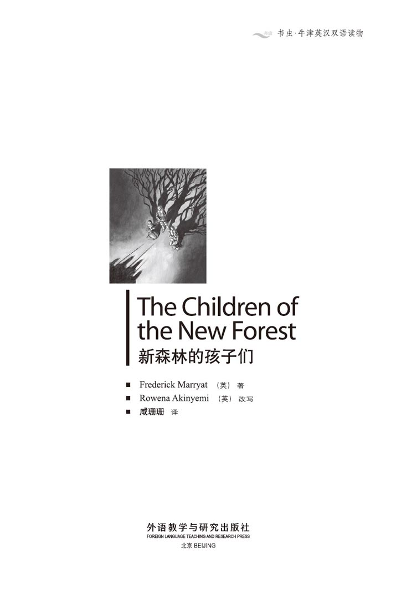
版权页
京权图字：01-2006-3292
Originally published by Oxford University Press, Great Clarendon Street, Oxford. © 2000
This edition is licensed for sale in the People's Republic of China only and not for export therefrom.
'Oxford' is a registered trademark of Oxford University Press.
只限中华人民共和国境内销售，不包括香港特别行政区、澳门特别行政区及台湾省。不得出口。
图书在版编目（CIP）数据
新森林的孩子们＝The Children of the New Forest／（英）马里亚特（Marryat，F.）著；（英）阿基尼米（Akinyemi，R.）改写；咸珊珊译．—北京：外语教学与研究出版社，2007.7（2013.8 重印）
（书虫·牛津英汉双语读物）
ISBN 978-7-5600-6812-1
Ⅰ．①新… Ⅱ．①马… ②阿… ③咸… Ⅲ．①英语—汉语—对照读物 ②儿童文学—短篇小说—英国—现代 Ⅳ．①H319.4：I
中国版本图书馆CIP数据核字（2007）第104900号
出版人： 蔡剑峰
责任编辑：易 璐
封面设计：孙莉明
出版发行：外语教学与研究出版社
社 址：北京市西三环北路19号（100089）
网 址：http://www.fltrp.com
版 次：2007年7月第1版
书 号：ISBN 978-7-5600-6812-1
* * *
制售盗版必究 举报查实奖励
版权保护举报电话：（010）88817519
内容简介
内容简介
1647年，贝弗利家的四个孩子——爱德华、汉弗莱、艾丽斯和小伊迪丝——正藏在新森林里。这时，英国国王被关在狱中，全国各地都在打仗——克伦威尔的人和国王的人打仗。而如果你是支持国王的，你可就极度危险了。
孩子们的父亲为国王作战时牺牲了，他们的母亲也死了，克伦威尔的士兵烧了他们的家，他们没有钱，没有食物，什么都没有了。但是他们有个真正的朋友——老雅各布·阿米蒂奇。所以现在，在雅各布的帮助下，他们必须学会靠土地生活——学习在森林里猎食，学习种菜，学习喂猪养鸡。
但是到处都是克伦威尔的人，孩子们必须学会永远不能说出他们是姓贝弗利……
THE CHILDREN OF THE NEW FOREST
THE CHILDREN OF THE
NEW FOREST
It is 1647 and the four Beverley children — Edward, Humphrey, Alice and little Edith — are in hiding in the New Forest. The King of England is in prison, and there is fighting everywhere in the country — Cromwell's men against the King's men. And if you are a friend of the King, you are in great danger.
The children's father died while fighting for the King, their mother is dead, Cromwell's soldiers have burnt their home, and they have no money, no food, nothing. But they have one true friend — old Jacob Armitage. So now, with Jacob to help them, they must learn to live off the land — to hunt for meat in the forest, to plant vegetables, to look after the pigs and chickens.
But Cromwell's men are everywhere, and the children must learn never to say that their name is Beverley...
目录
1．Escape!
1
Escape!
One day in November 1647, Jacob Armitage hurried through the New Forest to the house of Arnwood.
'You must leave this house immediately,' he said to Edward Beverley. 'Come with me to pack your things. You must come to my home and stay there.'
'But why, Jacob?' Edward asked the old man. 'Why?'
'The King has escaped from his prison at Hampton Court,' Jacob explained. 'He's riding south through the forest, and Cromwell's soldiers are searching for him. And I've just heard a group of soldiers in the forest — they were talking about Arnwood. They know that your father was the King's friend, and they're planning to burn Arnwood tonight, because they think the King is hiding here.'
'Burn Arnwood! They can't do that! It's my house, and I'm staying here!' Edward said angrily. He was fourteen years old, the oldest of the four Beverley children.
The Beverley children lived alone at Arnwood, with an old woman who did the cooking and all the work of the house. Their father, Colonel Beverley, was killed while fighting for King Charles I at Naseby in 1645. Before he left home, he asked Jacob, a poor forester who lived near Arnwood, to look after his family. Jacob knew the family well and was happy to do this. And when the children's mother died a few months later, Jacob came every day to visit the children and to help them.
'My dear boy,' Jacob said, 'remember your sisters and brother. The soldiers will shoot them, or burn them in the house. No, no, you must all come with me.'
In the end, Edward agreed. He and his brother Humphrey, who was twelve, packed their things. Then they put them on Jacob's horse, White Billy, who was waiting outside.
Jacob told Alice, who was eleven, and Edith, who was eight, that they were going to visit his home in the forest. He did not tell them about the soldiers.
'Edward, here is my key,' said Jacob quietly. 'Lock the door of the house, and take my gun from the wall. Don't leave your brother and sisters. I'll help the cook to pack her things, and then I'll follow you.'
The four children left the big house and went into the forest with White Billy. It was five o'clcok in the afternoon, and already dark. Jacob helped the cook, who hurried away to her family in Lymington, and then he hid in the trees near the house, and waited.
After a while he heard horses, and the Parliamentary soldiers arrived. Soon they were in the gardens and all round the house. A few minutes later Jacob saw black smoke going up into the sky; then he saw flames at the windows. Arnwood was burning!
'It is done,' thought Jacob, and he hurried away into the forest. In half an hour he arrived at his cottage. He looked back and saw the flames of Arnwood shooting higher and higher above the trees.
When he knocked on his door, Edward opened it and came out with Smoker, Jacob's big dog.
'My sisters are asleep in bed,' Edward told Jacob. Then Edward saw the flames of Arnwood and the angry red light between the trees, and he was silent.
'I told you,' Jacob said. 'The soldiers didn't look for you in the house before they burnt it.'
'Arnwood is my house!' said Edward angrily. 'And when I'm a man, I'll fight Cromwell's soldiers for this!'
'Perhaps you will,' Jacob said quietly. 'But let's go inside now. It's a cold night.'
Edward slowly followed Jacob into the cottage. He hated Cromwell and the Parliamentary soldiers. First they killed his father, and now they burnt his house. He lay down on the bed, but he did not sleep.
* * *
Jacob lived alone because his wife was dead, and he had no children. His cottage had one large room for living and cooking, and three small bedrooms behind. Outside there were a few chickens and pigs in one field and some old fruit trees in another field.
The next morning Jacob began to teach the children how to cook and to clean the cottage. It was all new work to them, because rich children like the Beverleys never cooked or worked in the house.
'You must stay inside today,' Jacob told them, 'because the soldiers are still searching the forest. Let's get some dinner ready. We can all help. Edward, will you go and get some water from the river?'
The children enjoyed cooking their first meal. They washed some potatoes and cut some meat and vegetables into pieces. Then they put them with some water in a pot on the fire. Little Edith put plates and knives on the table.
While the dinner was cooking, Edward stood outside the cottage, watching out for soldiers, and the other three made the cottage tidy. But just before dinner was ready, Edward ran back inside.
'I can see soldiers, and they're riding this way!'
Jacob was silent for a minute. 'My dear children, those soldiers will search the cottage, and I don't want them to see your rich clothes. You must go to bed and pretend to be ill. Edward, you can put on one of my old shirts.'
The younger children got into bed and hid their rich clothes. Edward put on Jacob's old shirt and sat next to the bed with a cup of water for his sisters. Quickly, Jacob put away the plates and knives. Soon there was a knock on the door.
'Come in,' said Jacob.
'Who are you, my firend?' asked one of the soldiers.
'A poor forester, sir,' replied Jacob, 'in great trouble. My grandchildren are all in bed, very ill.'
'We must search your cottage for the King.'
'Very well — but please don't frighten the children.'
The men began to search the cottage. Edith screamed when she saw them, but Edward told her not to be afraid.
'There's nothing here,' one of the soldiers said. 'Let's go. I'm tired and hungry.'
'There's something here that smells good,' said another soldier. 'What is it?' he asked, looking into the pot.
'My dinner for a week,' explained Jacob. 'I can't light a fire every day, so I cook once a week.'
'Well, it looks good, so we'll try some,' the soldiers said. And they put the pot on the table, sat down, and ate everything. Then they thanked Jacob and rode away.
Jacob called the children and told them to get up. 'The soldiers have gone,' he said.
'And our dinners have gone too,' said Humphrey, looking at the dirty plates and the empty pot.
'Bad men ate our dinner,' said Edith.
'We can cook another,' said Jacob. 'We're all hungry, but if everyone helps, the dinner will soon be ready.'
After dinner, Jacob told the children that their lives must change. 'The King's enemies think that you are dead, burned in Arnwood. But you are still in danger, and so you must stay here with me and pretend to be my grandchildren. You are children of the New Forest now.'
escape v. to break free from confinement or control 逃跑
hurry v. move or act with speed or haste 快速地移动
pack v. to fill (a suitcase or bag ) with clothes and other items needed for travel 捆扎，打包
forester n. a person in charge of a forest or skilled in forestry 护林人
flame n. red or yellow burning gas that is generated by something on fire 火焰，火苗
cottage n. a small simple house, typically one in the country 农舍，村舍
hate v. to have a very strong dislike of 憎恨
clean v. to make free of mess 打扫，清扫
vegetable n. a plant or part of a plant used as food 蔬菜
pot n. a round container made of metal, clay, etc., used for storage or cooking 锅
tidy adj. arranged neatly and in order 整齐的，整洁的
scream v. to utter a long, loud, piercing cry, as from pain or fear 尖叫
快逃！
1．快逃！
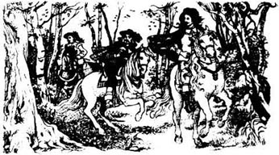
1647年11月的一天，雅各布·阿米蒂奇匆忙穿过新森林赶到安伍德大宅。
“你们必须马上离开这所房子，”他对爱德华·贝弗利说，“跟我来收拾你们的东西。你们必须到我家去，待在那里。”
“可为什么啊，雅各布？”爱德华问老人，“为什么？”
“国王从汉普顿宫的监狱中逃出来了，”雅各布解释道，“他正骑马穿越森林向南逃，克伦威尔的士兵正在搜寻他。而且我刚才听到森林里一群士兵的谈话——他们在谈论安伍德。他们知道你父亲是国王的朋友，他们正打算今晚烧掉安伍德，因为他们认为国王正藏在这儿。”
“烧掉安伍德！他们不能那样做！这是我的房子，我要留在这儿！”爱德华愤怒地说。他14岁了，是贝弗利家四个孩子中的老大。
贝弗利家的四个孩子自己住在安伍德，有个老妇人给他们做饭并负责所有的家务活儿。他们的父亲贝弗利上校1645年在内斯比为国王查理一世作战时牺牲了。他离家之前请求雅各布——一个住在安伍德附近的穷困的护林人——照顾他的家人。雅各布和这家人很熟，很乐意做这件事。几个月后孩子们的母亲去世了，雅各布便每天都来看孩子们，帮助他们。
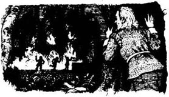
“我亲爱的孩子，”雅各布说，“想想你的妹妹们和弟弟。士兵们会开枪打他们的，或者把他们烧死在房子里。不，不，你们必须全部跟我来。”
最后，爱德华同意了。他和12岁的弟弟汉弗莱收拾好东西，然后把它们放到雅各布的马上。这匹马叫白比利，正在外面等着。
雅各布告诉11岁的艾丽斯和8岁的伊迪丝，说他们要去他在森林里的家里住几天。他没告诉她们有关士兵的事。
“爱德华，这是我的钥匙，”雅各布轻轻地说，“把房门锁上，把我的枪从墙上拿下来，不要离开你的弟弟妹妹们。我帮厨娘收拾她的东西，然后就会跟上你们。”
四个孩子离开了大房子，和白比利一起走进了森林里。那时是下午5点钟，天已经黑了。雅各布帮厨娘收拾好，她便匆忙赶往她在利明顿的家了，然后雅各布藏在房子附近的树林中等待着。
过了一会儿，他听到了马蹄声，议会的士兵到了。很快他们就散布到花园里和房子四周。几分钟后，雅各布看到黑烟升上天空，然后他看到了窗口冒出来的火苗。安伍德着火了！
“完了。”雅各布想。他急忙离开走进了森林，半个小时后到了自己的农舍。他回头看了看，看到安伍德的火越烧越旺，火苗在树顶上越升越高。
他敲了敲门，爱德华打开门，和雅各布的大狗斯莫克尔一起走出来。
“我的妹妹们上床睡觉了。”爱德华告诉雅各布。这时爱德华看见了安伍德的大火和树林中透出的愤怒的红色火光，他沉默了。
“我告诉过你的，”雅各布说，“那些士兵烧房子之前都没有进去找你们。”
“安伍德是我的房子！”爱德华愤怒地说，“等我长大了，我会跟克伦威尔的士兵算这笔账的！”
“或许你会的，”雅各布平静地说，“但是现在我们进屋去吧。今天夜里很冷。”
爱德华跟着雅各布慢慢地走进农舍里。他恨克伦威尔和议会的那些士兵。他们先是杀了他父亲，现在又烧了他的房子。他躺在床上，却无法入睡。
* * *
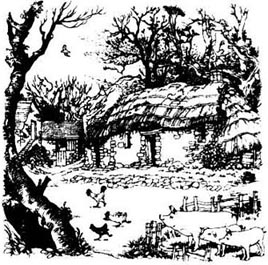
雅各布是一个人生活，因为他妻子去世了，而且他没有孩子。他的农舍里有一个起居和做饭用的大房间，后面有三间小卧室。屋子外面的一块地里养了几只鸡和几头猪，另外一块地里长着几棵老果树。
第二天早晨，雅各布开始教孩子们做饭和打扫屋子。这些对他们来说都是新鲜的工作，因为像贝弗利家这种富人家的孩子们在家从来不做饭，也不用干活。
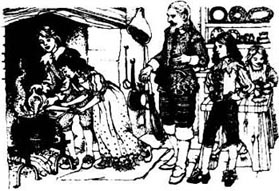
“你们今天必须待在屋里，”雅各布告诉他们，“因为士兵们还在搜查森林。我们来做点儿晚餐吧，大家都可以帮忙。爱德华，你能不能去河里打些水来？”
孩子们第一次做饭都很开心。他们洗了一些土豆，把肉和蔬菜切成块，然后加水一起放进炉火上的锅里。小伊迪丝把盘子和餐刀摆到桌子上。
晚饭在火上煮着时，爱德华站在农舍外面放哨，其他三个孩子把农舍打扫整洁。但正当晚饭要做好的时候，爱德华跑回屋里来。
“我能看到士兵，他们正骑着马往这边来！”
雅各布沉默了片刻。“我亲爱的孩子们，那些士兵会搜查农舍的，我不想让他们看到你们华丽的衣服。你们必须躺到床上装病。爱德华，你可以穿上我的一件旧衬衫。”
年幼的孩子们爬上床，藏起他们华丽的衣服。爱德华穿上雅各布的旧衬衫，给妹妹们端了一杯水坐在床边。雅各布迅速把盘子和餐刀收起来。很快传来了敲门声。
“进来。”雅各布说。
“你是谁，我的朋友？”其中一个士兵问道。
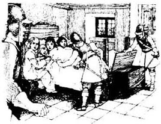
“一个贫穷的护林人，先生，”雅各布回答，“处境非常困难。我的孙子孙女们都在床上，病得很厉害。”
“我们必须搜查你的农舍寻找国王。”
“好的——但是请别吓着孩子们。”
那些人开始搜查农舍。伊迪丝看到他们的时候尖叫起来，但是爱德华告诉她不要害怕。
“这里没有，”其中一个士兵说，“我们走吧，我又累又饿。”
“这里有什么东西闻起来很不错。”另一个士兵说。“这是什么？”他看着锅里问道。
“我一个星期的晚餐，”雅各布解释说，“我不能每天都生火，所以每星期做一次饭。”
“哦，看起来不错，我们要尝尝。”士兵们说。然后他们把锅端到桌子上，坐下吃光了所有的东西。他们谢过雅各布便骑马离开了。
雅各布把孩子们叫起来。“士兵们已经走了。”他说。
“我们的晚餐也没了。”汉弗莱看着那些脏盘子和空空的锅说道。
“坏人们吃了我们的晚餐。”伊迪丝说。
“我们可以再做一顿，”雅各布说，“我们都饿了，但是如果每个人都帮忙，晚餐很快就会做好的。”
晚饭之后，雅各布告诉孩子们，他们的生活必须改变了。“国王的敌人以为你们死了，在安伍德被烧死了。但是你们还处在危险中，所以你们必须和我待在这里，装作是我的孙子孙女。你们现在是新森林的孩子了。”
2．Life in the Forest
2
Life in the Forest
The next morning Jacob rode to the town of Lymington. There he heard that the King was in prison again and that Cromwell's soldiers were going back to London. Jacob bought cottage clothes for the children and a few things for the house. Then he put everything on his horse and walked back home through the forest.
While he walked, he thought about the children. They were so young, and alone in a dangerous world — he was their only friend. But he was an old man, and perhaps would not live long. He knew he must teach them how to find food and do everything for themselves.
After dinner, he called the children round him. 'Now, remember, you are my grandchildren and your name is Armitage, not Beverley. I've bought you some cottage clothes to wear, and you must all learn to work and live like a forester's children. Edward is the oldest and he must come out with me into the forest and learn how to hunt. Then we'll have meat to eat every day. Humphrey, you must look after the horse and the pigs, and bring water from the river every day. Alice dear, you must light the fire, clean the house and wash the clothes, and you and Humphrey will both learn how to cook. And little Edith will look after the chickens and look for the eggs every morning — will you, Edith?'
'Yes,' said Edith. 'I liked the chickens at Arnwood.'
There was no more meat in the cottage and so the next morning Jacob and Edward, with the dog Smoker, went out into the forest. They walked quietly and did not speak. The red deer of the forest could see, hear and smell very well, and it was hard to get near them.
After more than a mile, Jacob dropped down to the ground, and through the trees Edward saw three deer. Jacob moved silently forward on his hands and knees, and Edward and Smoker followed him. Slowly they got nearer, but then suddenly the deer, who were quietly eating grass, put up their heads and walked away.
Jacob turned. 'You see, Edward, hunting is slow work. Now we must go through the woods around the other side of the deer and try again.'
'What frightened them, do you think?' asked Edward.
'When you were following me, I think you put your knee on a piece of stick and it broke.'
'Yes, but that made only a little noise.'
'Only a little noise will frighten a red deer,' said Jacob kindly. 'But these mistakes can happen to anyone, and you will learn. Now — not a word, and not a sound!'
In half an hour they found the deer again, and again Jacob dropped down to the ground and moved forward without a sound. At last, he lifted his gun and shot one of the deer behind the shoulder. The deer dropped to its knees and fell dead, and the other deer ran away.
'This is a fine deer and the meat will be good,' said Jacob. 'We're about five miles from the cottage, Edward, but Smoker will take you home, and you can come back with White Billy. He must carry the meat home for us.'
It was a good beginning to their new life, and the next day Jacob rode to Lymington to sell some of the meat. With the money he bought things for the vegetable garden, a big bag of oatmeal for the winter, and a gun for Edward.
* * *
That winter was long and cold, and they stayed in the cottage most of the time. Alice learned how to cook and to mend clothes. Edith learned to read and write, and to make oatmeal bread and cook it on the stones by the fire. Humphrey was clever with his hands, and learned how to make things out of wood. Edward learned how to shoot and to look after his gun. They were all busy and happy, but Edward sometimes felt angry. He kept his father's sword by his bed and often cleaned it. He hated Cromwell and his soldiers, and he wanted to fight for the King.
In the month of May, the leaves came out and the forest began to look green again. 'And now, Edward,' said Jacob one day, 'we need more meat, both to eat and to sell. So let's get our guns and go out. You can shoot first.'
They walked four or five miles before they saw a deer. 'Stay here, while I go through the trees with Smoker,' said Jacob quietly. 'Then I'll stand up, and the deer will run towards you. Remember, shoot it behind the shoulder.'
Edward waited quietly, and after a time the deer ran out of the trees in front of him. He lifted his gun, shot the deer behind the shoulder, and it fell to the ground.
'Well done!' said Jacob, when he came back. 'You killed your first deer! And it's a fine one, too. Soon I shall leave the hunting to you, and put my gun up on the wall!'
The spring was a busy time for everyone at the cottage. In the field they planted potatoes and lots of different vegetables. Little Edith was busy with her chickens, and Humphrey built a chicken-house, and a house for the pigs. Jacob sold some of the deer meat and bought a little cart. White Billy was not very happy about this at first, but he soon learned to pull the cart behind him, and it was a great help with all the farm work.
Humphrey loved the work on the farm. He was always making plans to do new things, and he was now very clever at building things out of wood. It was hard work. First he had to cut down a tree, and then cut the wood into pieces for building. One day he began to build a cow-house.
'We need a cow to give us milk,' he said to the others. 'I'm going to catch one of the forest cows.'
Edward laughed, but Jacob said, 'The forest cows are very wild, and can be dangerous. You must be careful.'
June arrived, and they began to cut the long grass, to keep for food for the animals in winter. The girls helped too, and White Billy was busy every day, pulling home the new cart full of summer grass.
Humphrey did not forget about his cow. He finished building the cow-house and began to spend an hour or more every day out in the forest. He was watching the wild cows. Early one morning he came running home.
'Jacob, Edward, come with me! Bring Smoker, too.'
'Why, what's the matter?'
'I've found a cow! She's left the other cows because of her new-born calf. So she's alone, and we can catch her.'
'But how?' asked Edward.
'I'll tell you later. I must get White Billy and the cart.' Jacob and Edward followed him, and soon they were driving the cart through the forest.
'Smoker will jump up at the cow,' explained Humphrey, 'and keep her away from us while we put the calf in the cart. When we drive away, the cow will follow her baby.'
The cow was lying near her calf, but when she saw them, she got up and shook her head angrily from side to side.
'Go, Smoker, go!' Jacob called to his dog, and Smoker jumped at the cow, driving her back into the trees away from her calf. Edward and Humphrey quickly lifted the calf into the cart, and got in themselves.
Then Jacob hurried back and got in too. 'Drive off, Humphrey,' he said. 'I'll call Smoker now, and the cow will follow us. Here, Smoker, here!'
Smoker came running out of the trees at once. The cow followed and ran wildly after the cart, calling loudly to her calf. Before long they were back at the cottage.
'There's Alice and Edith running out!' cried Jacob. 'Go back inside, Alice! The cow is dangerous!'
Humphrey drove the cart into the field. Smoker kept the cow away while they carried the calf into the cow-house. Then they left, and the cow followed its calf inside.
'There!' said Humphrey. 'Let's leave her with the calf. Tomorrow I'll cut some grass for her.'
Every day for a fortnight Humphrey brought grass to the cow, and every day she was a little quieter. After a month, Humphrey began to take milk from the cow.
'I have learned how to shoot deer,' said Edward. 'But Humphrey has caught a cow and given us milk. You are cleverer than I am, brother!'
deer n. a hoofed grasseating animal, of which the males usually have wide branching horns 鹿
silently adv. not making or accompanied by any sound 静静地
shoulder n. the joint between the upper arm or forelimb and the main part of the body 肩部
oatmeal n. crushed oats used for making cakes and porridge 燕麦片
mend v. to restore to a sound condition 修补
potato n. a starchy plant tuber which is one of the most important food crops, cooked and eaten as a vegetable 土豆
cart n. a vehicle with two or four wheels that is pulled by a horse and used for carrying heavy things 马车
wild adj. (of animals or plants) living or growing in the natural environment; not domesticated or cultivated （动植物）野生的，野蛮的
calf n. the baby of a cow 小牛
shake v. to tremble or vibrate or cause to do so 摇晃，摇动
fortnight n. a period of two weeks 两星期
森林里的生活
2．森林里的生活
第二天早上雅各布骑马去了利明顿镇。他在那里听说国王又入狱了，克伦威尔的士兵们要返回伦敦了。雅各布给孩子们买了农家衣物，还买了一些家用品。然后他把所有的东西放到他的马上，穿过森林走回家。
他一边走一边想着孩子们。他们年纪这么小，又独自处在这个危险的世界上——他是他们唯一的朋友。但是他已经是个老人了，可能活不了多久了。他知道自己必须教会他们如何寻找食物，如何自己处理一切事情。
晚饭之后，他把孩子们叫到身边。“现在要记住，你们是我的孙子和孙女，你们姓阿米蒂奇，不姓贝弗利。我给你们买了些农家衣服穿，你们全都必须学会像个护林人的孩子一样干活和过日子。爱德华是老大，他必须和我一起去森林里学习打猎，这样我们就每天都有肉吃了。汉弗莱，你必须照看好马和猪，并且每天从河里打水回来。亲爱的艾丽斯，你必须生炉火、打扫屋子和洗衣服，你和汉弗莱都要学做饭。小伊迪丝要喂鸡，每天早上找鸡蛋——你愿意做吗，伊迪丝？”
“愿意，”伊迪丝说，“我在安伍德的时候就喜欢小鸡。”
农舍里没有肉了，所以第二天早上雅各布和爱德华就带着大狗斯莫克尔去了森林里。他们悄悄地走着，没有说话。森林里的红鹿的视觉、听觉和嗅觉都非常灵敏，很难接近它们。
走出一英里开外之后，雅各布突然趴到地上，爱德华透过树丛看到了三只鹿。雅各布手和膝盖着地，悄无声息地向前挪动，爱德华和斯莫克尔跟在他后面。他们慢慢靠近了，但是突然间，刚才还在安静地吃草的鹿抬起头来走开了。
雅各布转过身。“你看，爱德华，打猎是个慢活。现在我们必须穿过树林，从鹿群的另一侧再试试看。”
“你觉得是什么吓着它们了？”爱德华问。
“你刚才跟着我的时候，我想你的膝盖压到了一根树枝，把它弄断了。”
“没错，但那只是很小的声音。”
“很小的声音也会把一只红鹿吓跑，”雅各布温和地说，“但是任何人都可能犯这种错误，你会学会的，现在——一句话也别说了，一点儿声音也别出！”
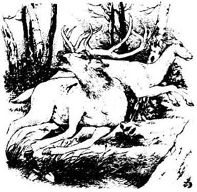
半个小时之后他们又发现了鹿，雅各布又趴到地上，静悄悄地向前挪动。最后，他举起枪朝其中一只鹿的后背开了一枪。那只鹿跪倒在地上死了，其他的鹿纷纷逃散。
“这是只很好的鹿，它的肉应该不错，”雅各布说，“爱德华，我们现在离农舍大概有5英里，但是斯莫克尔会带你回家的，然后你可以和白比利一起回来。他必须帮我们把肉运回家去。”
这是他们新生活的一个好的开始。第二天，雅各布骑马去利明顿卖了一些肉，他用那些钱买了菜园里需要的东西，一大袋冬天吃的燕麦片和一支给爱德华的枪。
* * *
那个冬天又长又冷，他们大部分时间都待在农舍里。艾丽斯学会了做饭和补衣服。伊迪丝学会了看书和写字，还学会了做燕麦面包和在炉火旁的石头上烤面包。汉弗莱的手很巧，他学会了用木头制作东西。爱德华学会了射击和照看他的枪。他们都很忙碌，也很快乐，但是爱德华有时候会感到愤怒。他把父亲的剑放在床边，经常擦拭。他恨克伦威尔和他的士兵，他想为国王作战。
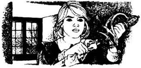
到了5月，树叶长出来了，森林又重新披上绿色。“现在，爱德华，”有一天雅各布说，“我们需要更多的肉，用来吃和卖钱。所以我们带上枪出去打猎吧。你可以先开枪。”
他们走了四五英里后看到了一只鹿。“你待在这里，我和斯莫克尔从树丛中穿过去，”雅各布轻轻地说，“然后我会站起来，鹿就会朝你跑过来。记住，要打它的后背。”
爱德华静静地等着，过了一会儿，那只鹿从他前面的树丛跑了出来。他举起枪，朝鹿的后背开了枪，那只鹿就倒在了地上。
“干得好！”雅各布回来说，“这是你打的第一只鹿！而且这也是一只很好的鹿。很快我就可以把打猎的事交给你，把我的枪挂到墙上了！”
春天对于农舍里的每个人来说都是个繁忙的季节。他们在地里种了土豆和许多各种各样的蔬菜。小伊迪丝忙着照看她的鸡，汉弗莱造了一个鸡舍和一个猪圈。雅各布卖了一些鹿肉，买了一辆小马车。白比利一开始对此不太高兴，但是他很快就学会了把这辆车拉在身后，这给所有的农活都帮了大忙。
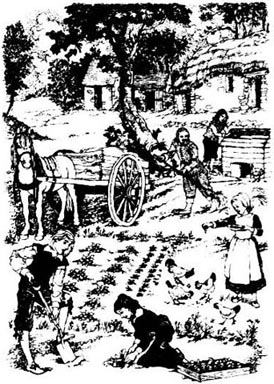
汉弗莱喜欢干农场上的活儿。他总是在计划着做新的东西，现在他非常精通用木头做东西了。这是件苦差事。首先他必须砍倒一棵树，然后把木头砍成几块用来建造。有一天，他开始动工造一个牛棚。
“我们需要一头牛挤奶喝，”他对其他人说，“我打算去逮一头森林里的牛。”
爱德华大笑，雅各布却说：“森林里的牛非常野蛮，可能会有危险。你一定要小心。”
6月到了，他们开始割长草，用作牲畜们冬天的食物，女孩子们也帮忙，白比利则每天都忙着把装满夏草的新马车拉回家。
汉弗莱没有忘记他的牛。他盖完了牛棚，就开始每天花一个小时或更多的时间待在森林里。他在观察野牛。一天清晨，他跑回家来。
“雅各布，爱德华，跟我来！把斯莫克尔也带上。”
“为什么，出什么事了？”
“我找到了一头牛！她为了刚出生的小牛离开了其他的牛，所以落单了，我们可以逮住她。”
“可是怎么逮呢？”爱德华问。
“过一会儿我会告诉你的。我必须准备好白比利和马车。”雅各布和爱德华跟着他，很快他们就驾着马车穿行在森林里了。
“斯莫克尔会跳起来扑向母牛，”汉弗莱解释道，“在我们把小牛放到车上的时候把母牛与我们隔开来。我们驾车离开的时候，母牛就会跟着她的孩子。”
母牛正躺在她的小牛旁边，但一看到他们，她就站了起来，愤怒地左右摇摆着脑袋。
“上，斯莫克尔，上！”雅各布冲着他的狗喊道，斯莫克尔扑向母牛，把她赶回到树丛里，离开了她的小牛。爱德华和汉弗莱飞快地抬起小牛放进车里，他们自己也上了车。
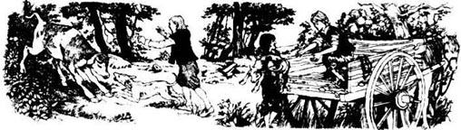
然后雅各布快速回来也上了车。“赶车，汉弗莱，”他说，“我现在要叫回斯莫克尔，母牛会跟着我们的。这里，斯莫克尔，这里！”
斯莫克尔立刻跑出树丛。母牛在后面疯狂地跟着马车跑，向她的小牛大声叫着。没多久他们就回到了农舍。
“艾丽斯和伊迪丝正往外跑呢！”雅各布喊道，“回屋里去，艾丽斯！母牛很危险！”
汉弗莱把马车赶到空地里。斯莫克尔把母牛拦住，他们便趁机把小牛抱进牛棚。然后他们一走开，母牛就跟着她的小牛进去了。
“进去了！”汉弗莱说，“我们让她和小牛待在一起吧。明天我会给她割些草来。”
接下来的两周里，汉弗莱每天都给母牛送草，母牛一天比一天安静下来。一个月之后，汉弗莱开始从母牛身上挤奶了。
“我学会了怎么打鹿，”爱德华说，“但是汉弗莱逮住了一头奶牛，让我们有牛奶喝。你比我聪明，弟弟！”
3．Edward Goes Visiting
3
Edward Goes Visiting
And so the summer went by, and every day was busier than the one before. Humphrey caught two more calves, and they now had more pigs and chickens. Jacob took some of the new young chickens to Lymington to sell, and bought salt and oatmeal, pots for the kitchen, and a gun for Humphrey.
King Charles was still in prison, and Cromwell's men went on killing their enemies and stealing the houses and land of the King's friends. Edward could not forget that he was a Beverley of Arnwood, and was often angry.
'I want to be a soldier like our father,' he told Humphrey. 'I want to fight for the King, and tell the world that my name is Beverley!'
'If you do that, Cromwell's men will put you in prison,' Humphrey said. 'I know how you feel, Edward, but for now. you must stay here with us. What will happen to our sisters if you leave? I can't do all the work, and poor Jacob is getting old and tired.'
It was true. Jacob was nearly seventy-six years old and no longer strong. That winter he was often ill and could not leave the cottage. Edward did most of the hunting. He was now very good at it, and knew the forest well.
Early in 1649 Humphrey told Jacob that he needed another dog. 'Smoker is a hunting dog,' he said. 'I need a dog to help me with all the farm animals.'
'A puppy will learn most easily,' said Jacob. 'Oswald Partridge, a forester who lives on the other side of the forest, always has puppies, and he will give us one. But Edward, you must go. I cannot ride that far. Tell Oswald that you are my grandson. He'll be a good friend to you. But remember, your name is Armitage!'
The next morning Edward rode White Billy across the forest. He was happy to go out into the world again, but he knew he must be careful. After two hours he arrived at some cottages and knocked on the first door. A girl aged about fourteen opened the door, and told him that Oswald Partridge was out in the forest.
'I must wait for him, then,' said Edward. 'I've come to ask him for a puppy for my grandfather, Jacob Armitage.'
'Wait a minute,' the girl said. She went inside, and then came back. 'You must come and speak to my father.'
Edward followed the girl inside. The man sitting at a table was dressed like one of Cromwell's men. His tall hat lay on a chair with his sword underneath it. The girl sat down by the fire, and the man went on reading a letter. He did not look at Edward for two or three minutes.
Edward felt angry. But he was just a poor, unimportant forester, he remembered. So he said nothing, and waited.
'What's your business, young man?' the man said at last.
'I came, sir, to see Oswald Partridge about a puppy for my grandfather, Jacob Armitage.'
'Armitage!' The man looked at some papers on the table. 'Yes, one of the foresters. Why hasn't he visited me?'
'Why must he see you, sir?'
'Because Cromwell has given the New Forest to me, to look after for Parliament. My name is Hetherstone, and all the foresters now work for me.'
'My grandfather has not heard this, sir,' said Edward. 'The New Forest belongs to the King, and my grandfather is one of the King's foresters. But he has a cottage and a farm which belong to him, and not the King.'
'Yes, I know about Jacob Armitage. And I know that he was Colonel Beverley's friend. The Colonel was a brave man, it's true, but he fought for the King and so was an enemy of Parliament. Tell me, were you a friend of the Beverley family?'
'When I was a child, I lived at Arnwood with the Beverley children.'
'And where were you when the soldiers burned Arnwood?'
'I was at my grandfather's cottage,' replied Edward, his eyes wild with anger.
'I can understand why you feel angry about that.' Mr Hetherstone shook his head slowly. 'Those soldiers did a terrible, terrible thing, 'he said quietly. Then he looked up at Edward again. 'But you must understand, young man, that your grandfather can no longer work as a forester. I cannot give work to people who are friends of the King. The forest deer now belong to Cromwell, and if you shoot any deer, you will go to prison for it.'
'Sir,' Edward said quietly, 'the King himself is in prison and so he cannot pay his foresters. If they kill the deer, it is because they must have food to eat. I am sure the King will understand that his people must live.'
'Well, well, those are brave words. But you will still go to prison if we catch you. Now, you can go to the kitchen and wait for Oswald.' Mr Hetherstone turned to his daughter. 'Patience, give Armitage something to eat.'
Edward went out and took White Billy to the stables behind the cottage, then followed Patience to the kitchen. 'I came here for a puppy,' he thought, 'and I have found a Roundhead — who sends a Beverley of Arnwood to eat in the kitchen! But he is sorry about the burning of Arnwood, so I don't hate him.'
Patience put food on the table. Edward thanked her and sat down to eat. Patience smiled, and Edward saw that she was a beautiful girl.
Later, he met Oswald Partridge and saw his dogs. Oswald was very surprised to see him. 'I never knew Jacob had a grandson,' he said. 'I never knew he had a son! Are you on the King's side, like Jacob?'
'To the death, ' replied Edward, 'when the time comes.'
'Ah, then you can have one of my puppies,' Oswald said. He told Edward a bit about Mr Hetherstone. 'He's one of Cromwell's good friends, they say, but he's not a bad man. There are some much worse than him. I've kept my job, but many haven't. We must all be careful these days.'
It was now late, so Edward stayed the night in a room above the stables. There was no bed and no door, and Edward could not sleep because he was so cold. Soon he got up and began to walk around outside, to get warm.
There was a light upstairs at one of the windows of the Hetherstones, cottage, which was strangely bright. Edward watched it. He saw someone moving in the room, and suddenly he saw flames. The room was burning!
'Fire! Fire!' he shouted. He ran back to the stables and found a ladder. Then he quickly climbed up it to the window, broke the glass, and got into the room. There was smoke everywhere, and he fell over a body on the floor. Quickly, he lifted the body and moved back to the window. The flames were now running along the floor, getting higher and higher. With the body in his arms, he got out onto the ladder, but the flames caught his shirt, burning his arm. He climbed down and carried the body into the stables. There he saw that it was Patience Hetherstone.
Edward ran outside again, and saw that other people were coming with buckets of water. There was a lot of shouting, and Edward was soon up the ladder again while others carried buckets of water up to him.
In the crowd below, Mr Hetherstone was trying to get near the ladder. 'Save her!' he cried. 'My daughter's up there! She'll burn to death!'
At the top of the ladder, Edward did not hear his cries, but a voice came from the crowd：'There were four burned at Arnwood.'
Mr Hetherstone fell down, his face white, and some men carried him into another cottage.
At last the fire was put out, and Edward came down the ladder. He called Oswald and they went to the stables. Patience was still lying on the floor, but her eyes were now open. She was alive!
They gave her some water and carried her to Oswald's cottage. Then Edward said quietly to Oswald, 'I shall ride home now at once. Come and visit Jacob soon if you can. He's not been well all this winter.'
'But Mr Hetherstone will want to thank you for saving his daughter's life,' said Oswald.
'I don't want Mr Hetherstone's thanks. I want nothing from the King's enemy,' said Edward. He rode home with Humphrey's puppy inside his coat. His arm was badly burned, and it was a long time before it was better.
steal v. to take something without permission or legal right and without intending to return it 偷窃
puppy n. a young dog 小狗
dress v. to put clothes on 给……穿衣
underneath prep. directly below 在……的下面
brave adj. showing courage 勇敢的
stable n. a building for housing horses 马厩
Roundhead n. a supporter of the Parliament against the King in the English Civil War （英国内战时支持议会反对国王的）圆颅党人
like prep. similar to 像，如同
bright adj. giving out much light, or filled with light 明亮的
ladder n. a structure consisting of a series of bars or steps between two upright lengths of wood or metal, used for climbing up or down 梯子
bucket n. a cylindrical open container with a handle, used to carry liquids 桶
爱德华外出拜访
3．爱德华外出拜访
夏天就这样过去了，一天比一天更忙碌。汉弗莱又逮了两头小牛，而且他们现在有了更多的猪和鸡。雅各布把一些新出生的小鸡拿到利明顿去卖，买回来盐和燕麦片，买了厨房用的锅，还给汉弗莱买了一支枪。
国王查理仍然在狱中，克伦威尔的人继续杀害他们的敌人，并窃取国王支持者的房子和土地。爱德华无法忘记他是安伍德贝弗利家的一员，时常气愤不已。
“我想像我们的父亲一样成为一名士兵，”他对汉弗莱说，“我想为国王而战，告诉全世界我的姓氏是贝弗利！”
“如果你那样做，克伦威尔的人会把你抓进监狱的，”汉弗莱说，“我明白你的感受，爱德华，但是目前你必须和我们待在这儿。如果你离开了，我们的妹妹们怎么办？我干不了所有的活儿，可怜的雅各布年纪越来越老，越来越累了。”
这是事实。雅各布将近76岁了，已经不再强壮了。那个冬天他经常生病，都无法离开农舍了。大部分打猎的活儿都是爱德华包了。他现在很擅长打猎，对森林也很熟悉。
1649年初，汉弗莱告诉雅各布他还需要一只狗。“斯莫克尔是只猎犬，”他说，“我需要一只狗来帮我照看农场里的所有动物。”
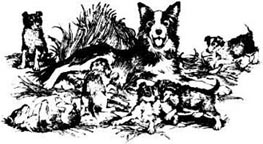
“小狗学得最快了，”雅各布说，“奥斯瓦尔德·帕特里奇是住在森林另一边的护林人，他那儿总是有小狗，他会给我们一只的。但是爱德华，你得去一趟。我不能骑马走那么远。告诉奥斯瓦尔德你是我的孙子，他会对你很友好的。但是记住，你是姓阿米蒂奇！”
第二天早上，爱德华骑着白比利穿过森林。他很高兴又重新走进了外面的世界，但是他知道自己必须要小心。两个小时之后，他来到了一片农舍外，敲了敲第一户人家的门。一个14岁左右的女孩开了门，她告诉他奥斯瓦尔德·帕特里奇到森林里去了。
“那么我得等他了，”爱德华说，“我来是为了替我爷爷雅各布·阿米蒂奇向他要一只小狗。”
“等一会儿。”那个女孩说。她走进屋去又走回来。“你得来跟我父亲说。”
爱德华跟着女孩走进去。坐在桌旁的男人穿得像是克伦威尔的人。他的高帽子放在一把椅子上，帽子下面放着他的剑。女孩在炉火旁坐下，那个男人继续看一封信，有两三分钟都没看爱德华一眼。
爱德华感到气愤。但是他只是一个毫不重要的穷护林人，他记得这一点。所以他什么也没说，只是等着。
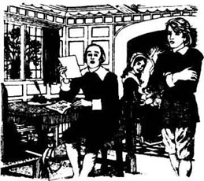
“你有什么事情，年轻人？”那个男人终于开口了。
“先生，我是来找奥斯瓦尔德·帕特里奇的，为我爷爷雅各布·阿米蒂奇向他要只小狗。”
“阿米蒂奇！”男人看了看桌上的一些文件。“哦，一个护林人。他为什么没来见我？”
“为什么他必须来见您，先生？”
“因为克伦威尔把新森林给了我，让我替议会照管。我叫赫瑟斯顿，现在所有的护林人都为我工作。”
“我爷爷没有听说此事，先生，”爱德华说，“新森林属于国王，我爷爷是国王的护林人。但是他有一个属于他自己的农舍和农场，这些不是属于国王的。”
“是的，我知道雅各布·阿米蒂奇。而且我还知道他是贝弗利上校的朋友。上校是个勇敢的人，没错，但是他为国王而战，所以就是议会的敌人。告诉我，你是贝弗利家的朋友吗？”
“我小时候和贝弗利家的孩子一起住在安伍德。”
“那么士兵们烧安伍德的时候，你在哪儿呢？”
“我在爷爷的农舍里。”爱德华回答，他的眼神由于愤怒而疯狂。
“我可以理解你为什么为此感到愤怒。”赫瑟斯顿先生缓缓地摇了摇头。“那些士兵做了件非常非常可怕的事情。”他平静地说。然后他又抬头看着爱德华说道：“但是你必须明白，年轻人，你爷爷不能再当护林人了。我不能把工作交给国王的支持者做。森林里的鹿现在也归克伦威尔了，如果你捕杀了任何一只，你就会因此而入狱。”
“先生，”爱德华平静地说，“国王自己也在狱中，所以他不能付钱给他的护林人。如果他们杀死了鹿，那是因为他们必须有食物吃。我敢肯定国王会理解的，他的人民必须活下去。”
“好，好，这些话很勇敢。但是如果我们抓到你这么做的话，你仍然会进监狱的。现在，你可以去厨房等奥斯瓦尔德了。”赫瑟斯顿先生转过头对他的女儿说：“佩兴斯，给阿米蒂奇一些吃的。”
爱德华走出来，把白比利牵到农舍后面的马厩里，然后跟着佩兴斯到了厨房。“我来这里是为了要小狗，”他想，“却发现了一个圆颅党人——他把安伍德贝弗利家的一员打发到厨房里吃饭！但是他为安伍德被烧感到抱歉，所以我不恨他。”
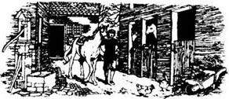
佩兴斯把食物放到桌上。爱德华谢过她，坐下吃起来。佩兴斯笑了，爱德华发现她是个漂亮的姑娘。
稍晚些时，他见到了奥斯瓦尔德·帕特里奇，看到了他养的狗。奥斯瓦尔德看到他非常吃惊。“我从来不知道雅各布有个孙子，”他说，“我从来都不知道他有儿子！你是国王一边的吗，像雅各布一样？”
“至死效忠国王，”爱德华回答道，“只等时机到来。”
“啊，那么你可以得到我的一只小狗。”奥斯瓦尔德说。他告诉了爱德华关于赫瑟斯顿的一些事情。“人们说他是克伦威尔的亲信之一，但他不是个坏人。有些人比他坏多了。我保住了我的工作，但是很多人没有。如今我们都必须小心。”
这时天色已晚，于是爱德华就留在马厩上面的房间里过夜。房里没有床，也没有门，爱德华无法入睡，因为他太冷了。没一会儿他就起来，开始在外面走动，好让自己暖和点。
赫瑟斯顿家农舍的楼上有一个窗口发出光亮，那光亮异常地耀眼。爱德华注视着窗口。他看到有人在屋里走动，突然他看到了火苗。那个房间着火了！
“着火了！着火了！”他大喊。他跑回马厩找了架梯子，然后他快速顺着梯子爬到窗口，打碎玻璃，进了房间。屋里到处都是烟，他绊倒在地板上的一个人身上，他迅速抱起那个人回到窗口。现在火焰正沿着地板燃烧，越烧越高。他抱着那个人出来上了梯子，但是火烧着了他的衬衫，烧到了他的胳膊。他爬下来，把那个人抱到马厩里。在那里他发现这人原来是佩兴斯·赫瑟斯顿。
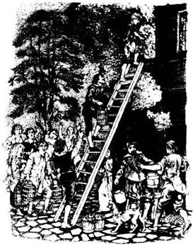
爱德华又跑出来，看到其他人正提着一桶一桶的水赶来，到处都是喊叫声。爱德华很快又爬到梯子上，而其他人则把水桶递上去给他。
在下面的人群里，赫瑟斯顿先生正试图接近梯子。“救救她！”他喊道，“我女儿在那上面！她会被烧死的！”
爱德华在梯子上面，没听到他的叫喊，但是有个声音从人群中传来：“在安伍德烧死了四个。”
赫瑟斯顿先生跌倒在地，脸色苍白，一些人把他扶进了另一间农舍里。
最后火被扑灭了，爱德华从梯子上下来。他叫上奥斯瓦尔德一起去了马厩。佩兴斯还躺在地上，但是她的眼睛现在睁开了。她还活着！
他们给她喝了些水，把她抬到了奥斯瓦尔德的农舍里。然后爱德华平静地对奥斯瓦尔德说：“我现在要马上骑马回家。如果可以的话，你早点儿来看看雅各布吧。他整个冬天都不太好。”
“但是赫瑟斯顿先生会想谢谢你救了他的女儿的。”奥斯瓦尔德说。
“我不想要赫瑟斯顿先生的感谢，我不想要国王的敌人的任何东西。”爱德华说。他把汉弗莱的小狗揣在外套里，骑马回家了。他的胳膊严重烧伤，很长时间之后才有所恢复。
4．Secretary to Mr Hetherstone
4
Secretary to Mr Hetherstone
When Edward arrived back at the cottage, Humphrey came out to meet him, and his face was unhappy.
'Oh Edward, Jacob is very ill. The girls are with him now. We think he's dying.'
Edward hurried inside, and the four children stayed by Jacob's bedside all that day. In the evening Jacob spoke to them all very lovingly, one by one. Those were his last words, and a little later, he died.
The children cried for a long time because they dearly loved the good old man. The next morning they buried him under an oak tree behind the cottage, and they planted wild flowers above his body.
'We have lost a good friend,' said Edward. 'He saved us from the flames of Arnwood and he has looked after us since then, in his cottage. We must now look after ourselves, and try to be happy together.'
Six weeks went by, and then Oswald Partridge came to visit them. 'How is the old man?' was his first question.
'We buried him six weeks ago,' replied Edward.
'I'm sorry to hear it, ' said the forester. 'He was a good man. And how is your arm?'
'Nearly well,' said Edward. 'Now, sit down, Oswald. Tell me, why didn't you visit us sooner?'
'In a word — murder. These terrible Roundheads have killed the King. A few days after the fire, Mr Hetherstone went to London. He told me to stay near his cottage to look after his daughter. In London he tried to stop the murder, but Cromwell and his men didn't listen to him. He came home yesterday, and told us all about it.'
'The King murdered !' cried Edward. 'How can they murder a King? Well, the time will come. If I cannot fight for the King, one day I shall fight against his murderers.'
Oswald stayed to eat dinner at the cottage, and was very friendly with them all. He stayed the night and the next day Edward decided to tell him their secret.
'Colonel Beverley's children?' said Oswald. 'Well, this is happy news! And it's true, Edward, that you don't look like a forester's son. Mr Hetherstone thinks that too. He has asked me lots of questions about you, and he says that he will visit you himself to thank you for saving his daughter's life. But I'll keep your secret, and I shall be happy to help the Colonel's children.'
'Then can you tell me how much to pay for oatmeal and salt?' said Edward. 'And who will buy deer meat and pay well for it? You see,' he went on, 'now that Jacob is dead, I must go to Lymington myself to do these things.'
Oswald told him the names of men who would buy deer meat — and ask no questions. 'But be careful, Edward. Mr Hetherstone would like to help you because you saved his daughter's life, but he cannot save you from the soldiers if they catch you killing the forest deer.'
During that summer Edward and Humphrey went hunting together when they needed meat. They kept a careful watch for strangers, but they knew the forest well now and could move as silently and as cleverly as the deer. Humphrey's farm was getting bigger all the time. With the vegetable gardens, and the chickens and cows and pigs, it was hard work for them all, but the children never went hungry — thanks to Jacob Armitage's teaching.
One day Humphrey was out in the forest, getting food for the pigs, and he found a Spanish gipsy boy lying on the ground. The boy was nearly dead from hunger and thirst, and Humphrey carried him back to the cottage. Alice and Edith looked after him, and when he was well again, they asked him to stay and work on the farm.
The boy's name was Pablo and he was about fifteen years old. His English was not very good, and he had no friends, no family. He was happy to stay at the cottage.
'Lost in the forest. No food, no water. Nearly dead,' he explained. 'You save my life. Happy to work for you. Happy to have food and bed. Happy to have new friends.'
* * *
It was nearly winter when Mr Hetherstone, with his daughter Patience, came to the cottage. At first Alice and Edith were afraid when they saw his tall hat, but he spoke kindly to them all. And Patience took Edward's hand and thanked him again and again for saving her life.
Then Mr Hetherstone spoke to Edward. 'You saved my only child from the fire, Edward Armitage, and I thank you.'
'Mr Hetherstone, I cannot understand you,' Edward said. 'You are a good man — but you are a friend of Cromwell, who has murdered the King!'
'Edward, you are young and you can't remember the troubles in England because of King Charles. He never listened to Parliament, he did only what he wanted, and the people were very angry. They fought because they wanted to be free. But now Cromwell and his friends will listen to nobody. They have murdered the King, and they are worse than he ever was. One day the people of England will be free again. But for now we can't speak of these things openly — it's too dangerous.'
'Thank you, sir,' said Edward quietly. 'I understand you better now. I'll try to be careful, because I want to fight against Cromwell when the time is right.'
Mr Hetherstone looked kindly at Edward. 'Now, I want to help you. You know that you were born for better things than a forester's life. I would like you to be my secretary and live at my house. I will pay you and you can help your family. Don't answer me now. Talk to your brother about it first.'
Alice and Edith made dinner, and they all ate together. Patience enjoyed the farm very much, and she liked Alice and Edith. 'We shall all be firends,' she said when they said goodbye. And she smiled her beautiful smile.
Later, Edward talked to Humphrey. 'What shall I do? I want to be a soldier, not a secretary,' he said.
'You're too young,' said Humphrey. 'I like working on the farm, and now I have Pablo to help me. I know that you want to get out into the world, but for now you must take this job. Mr Hetherstone will be a good friend to us all.'
So Edward bought a black suit and a tall hat, kissed his sisters goodbye, and went to live in Mr Hetherstone's cottage. Every morning he wrote letters for Mr Hetherstone, and every afternoon he spent time with his daughter. He began to like Patience very much. Every week he rode across the forest to see his family. Sometimes Patience went with him, to visit Alice and Edith.
And so a year and more went by. The next winter there was a lot of snow and travelling was difficult. But in the world outside, things were happening, and news came to Mr Hetherstone in the spring.
'The King's son has arrived in Scotland and is now King Charles Ⅱ,' he told Edward. 'He's coming south with his army to England, and I think the time is right for you to ride north and meet him. I'll give you letters to some friends who will help you.'
And so the next morning Edward said goodbye to Patience and kissed her hand. She cried to see him go. Then, with his father's sword by his side, Edward rode away on Mr Hetherstone's black horse, to fight for the King at last.
lovingly adv. in a way that expresses love 钟爱地，亲切地
dearly adv. very much 深深地
bury v. to put or hide underground 埋葬
oak n. a large tree which bears acorns and typically has lobed leaves and hard durable wood 橡树
murder n. the crime of deliberately killing someone 谋杀
gipsy n. a member of a travelling people with dark skin and hair, speaking a language related to Hindi, and traditionally living by itinerant trade and fortune telling 吉普赛人
trouble n. problems that make something difficult 麻烦，问题
suit n. a set of outer clothes made of the same fabric and designed to be worn together, typically consisting of a jacket and trousers or skirt 一套衣服，套装
赫瑟斯顿先生的秘书
4．赫瑟斯顿先生的秘书
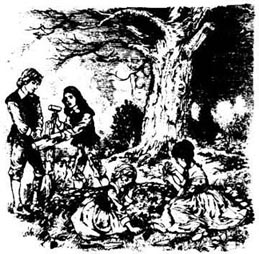
当爱德华回到农舍时，汉弗莱出来迎接他，他一脸忧伤。
“唉，爱德华，雅各布病得很厉害。女孩们现在正陪着他。我们觉得他快要死了。”
爱德华匆忙走进屋里，四个孩子那天一整天都陪在雅各布的床边。晚上，雅各布对他们每个人都疼爱地一一作了嘱咐。那些是他最后的话，没过多久，他就死了。
孩子们哭了很长时间，因为他们深深地爱着这位好心的老人。第二天早上，他们把雅各布埋到了农舍后面的一棵橡树下面，并且在他的坟上种上了野花。
“我们失去了一位好朋友，”爱德华说，“他使我们免遭安伍德那场大火，从那以后他让我们住在他的农舍里，一直照顾我们。现在我们必须自己照顾自己了，而且要尽量高兴地在一起。”
六个星期过去了，这时奥斯瓦尔德·帕特里奇来拜访他们了。“那位老伙计怎么样了？”他一来就问道。
“我们六个星期前埋葬了他。”爱德华回答。
“这让我很难过，”这个护林人说，“他是个好人。那你的胳膊怎么样了？”
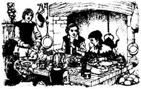
“差不多好了，”爱德华说，“现在，坐下吧，奥斯瓦尔德。告诉我，你为什么没有更早一点儿来看我们？”
“一句话——谋杀。这些可怕的圆颅党人杀害了国王。大火之后过了几天，赫瑟斯顿先生去了伦敦。他要我待在他的农舍附近，照顾他女儿。在伦敦，他试图阻止谋杀，但是克伦威尔和他的手下不听他的。他昨天回到家给我们讲了这一切。”
“国王被杀害了！”爱德华大叫，“他们怎么能谋杀一个国王呢？好吧，时机会到来的。如果我不能为国王而战，总有一天我会找那些谋杀国王的凶手算账的。”
奥斯瓦尔德留在农舍里吃了晚餐，他对他们全都非常友好。他在那儿过了夜，第二天爱德华决定把他们的秘密告诉他。
“贝弗利上校的孩子？”奥斯瓦尔德说，“啊，这是个好消息！而且，爱德华，你看起来确实不像一个护林人的儿子，赫瑟斯顿先生也这么认为。他问了我很多关于你的问题，他还说他会亲自来拜访你，感谢你救了他女儿。但是我会为你们保守秘密的，我很高兴能帮助上校的孩子们。”
“那你能告诉我买燕麦片和盐需要多少钱吗？”爱德华问。“另外，有谁会买鹿肉，而且能出个好价钱呢？你知道，”他继续道，“现在雅各布去世了，我必须自己去利明顿做这些事情。”
奥斯瓦尔德告诉了他几个会买鹿肉的人的名字——什么问题都没问。“但是要小心，爱德华。赫瑟斯顿先生会愿意帮助你的，因为你救了他女儿，但是如果你杀森林里的鹿被士兵们抓住，他就救不了你了。”
那个夏天，当他们需要肉的时候，爱德华和汉弗莱就一起去打猎。他们很警惕陌生人，但是他们现在对森林很熟悉了，行动起来能像鹿一样悄无声息而且灵敏。汉弗莱的农场一直在扩大。他们要照看菜园、鸡、牛和猪，这对于他们所有人来说都是很辛苦的工作，可孩子们从来没挨过饿——多亏了雅各布·阿米蒂奇的教导。
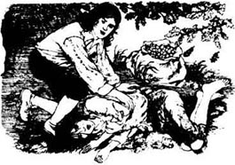
有一天，汉弗莱在森林里找猪食时，发现一个西班牙吉普赛男孩躺在地上。男孩又饿又渴，快要死了，汉弗莱把他带回了农舍。艾丽斯和伊迪丝照顾他，当他身体恢复后，他们要他留下来，在农场上干活。
男孩叫帕布洛，大概15岁了。他的英语不太好，没有朋友，也没有家人。他很高兴能留在农舍。
“在森林里迷了路。没有食物，没有水。就快死了，”他解释说，“你们救了我的命。很高兴为你们工作。很高兴有食物和床。很高兴有新朋友。”
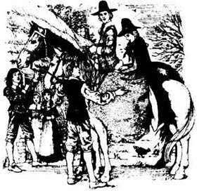
* * *
赫瑟斯顿先生和他女儿佩兴斯来农舍的时候已经快到冬天了。一开始，艾丽斯和伊迪丝看到他的高帽子时还有些害怕，但是他对他们所有人说话都很和善。佩兴斯拉着爱德华的手，一遍又一遍地感谢他救了自己。
然后赫瑟斯顿先生对爱德华说：“你从火中救了我唯一的孩子，爱德华·阿米蒂奇，我感谢你。”
“赫瑟斯顿先生，我不理解您，”爱德华说，“您是个好人——但您却是克伦威尔一边的，是他杀害了国王！”
“爱德华，你年纪小，不记得国王查理给英国造成的问题。他从来不听议会的意见，只做自己想做的事，人民都很愤怒。人们作战是因为他们想要自由。但是现在克伦威尔和支持他的那帮人谁的话也不听，他们杀害了国王，他们比国王以前还坏。总有一天英国人民会再次自由的。但是现在我们不能公开说这些事——这太危险了。”
“谢谢您，先生，”爱德华轻轻地说，“现在我能理解您多一点儿了。我会尽量小心的，因为我想等时机适当的时候反击克伦威尔。”
赫瑟斯顿先生亲切地看着爱德华。“现在，我想帮助你。你知道，你生来就该拥有比护林人更好的生活。我希望你可以做我的秘书，住在我家。我会付给你酬劳，你可以帮助你的家人。现在别答复我，先和你弟弟商量一下。”
艾丽斯和伊迪丝做了晚饭，他们都在一起吃了饭。佩兴斯非常喜欢农场，也喜欢艾丽斯和伊迪丝。“我们大家都会成为朋友的。”他们道别时她说道，并且露出甜美的微笑。
随后，爱德华和汉弗莱谈了这件事。“我该怎么办呢？我想成为一名士兵，而不是秘书。”他说。
“你太年轻了，”汉弗莱说，“我喜欢在农场干活，而且现在我有帕布洛帮忙。我知道你想到外面的世界去，但是目前你必须接受这份工作。赫瑟斯顿先生会和我们都成为好朋友的。”
于是爱德华买了一套黑色礼服和一顶高帽子，与他的妹妹们吻别后，就搬到赫瑟斯顿先生家里去了。每天早上他替赫瑟斯顿先生草拟信件，下午就和他女儿待在一起。他开始非常喜欢佩兴斯了。他每周都骑马穿过森林回去看望他的家人，有时候佩兴斯和他一起去看望艾丽斯和伊迪丝。
就这样一年多过去了。第二年冬天经常下雪，出行很困难。但是在外面的世界，发生了一些事情，消息是在春天传到赫瑟斯顿先生这里的。
“国王的儿子已经到了苏格兰，现在是国王查理二世，”他告诉爱德华，“他正和他的军队往南向英格兰这边来，我想这是你骑马北上与他会合的适当时机了。我会为你写几封信给一些朋友，他们会帮你的。”
于是，第二天早上爱德华向佩兴斯告别，吻了她的手。她哭着目送他离开。就这样，爱德华把他父亲的剑带在身边，骑着赫瑟斯顿先生的黑马出发了，他终于能够去为国王而战了。
5．Soldier of the King
5
Soldier of the King
Edward had many adventures. He made new friends, and the King was very pleased to learn that the children of Colonel Beverley were alive and well. But the time was not yet right for King Charles II. Cromwell's army was still very strong, and by autumn 1651 the King's soldiers were either dead, or running away, back to Scotland. The King himself escaped alone — no one knew where.
Edward returned secretly to the New Forest, wearing the uniform of a dead Roundhead soldier. He arrived at the cottage late at night and frightened his family and Pablo very much. Then they heard his voice, and in a minute Edward was in the arms of his brother and sisters.
Early the next morning Edward rode across the forest to see Mr Hetherstone, who was very pleased to see him. He listened to Edward's news, then said:
'So,we must wait a while longer before we see a new King, and we must still pretend to be Cromwell's friends. We'll say that you went to fight for Cromwell. It was clever of you to come back in a Roundhead's uniform — that will help to keep both of us out of danger.'
For some days Cromwell's men searched the forest for the King. Then came news that the King was now in France, and at last the soldiers left the forest.
Edward returned to his job of secretary to Mr Hetherstone. Patience was very pleased to see him again, but Edward felt uncomfortable. He now wanted to tell Patience that he loved her, and he wanted to tell her father the secret of his name. But he was still a young man, and he did not know how to do either of these things.
One evening he found himself alone in the garden with Patience. For a while they talked of his adventures with the King, then Edward said:
'While I was away, I was always thinking of you. And now I have seen you again, I know that I must speak. I love you, Patience, and want to be with you always.'
Patience looked away. 'You saved my life, and I can never forget that, Edward,' she said quietly. 'I know that you're my friend, and I thank you for your kind words. But I'm young and I must talk to my father.'
Edward did not understand her answer. What did she mean? Did she love him, or didn't she?
'Do you think that your father will say no because I'm only a poor forester?' he began.
Just then Mr Hetherstone came out into the garden and called to them. 'Edward, I was looking for you. A letter has just arrived from Parliament. Look.'
The letter said that Parliament was giving Arnwood and its land to Mr Hetherstone. Edward's face turned white and for a minute he could not speak.
'We'll ride across tomorrow and look at Arnwood. I want to rebuild the house,' said Mr Hetherstone.
'But Arnwood belongs to the Beverley family,' Edward said carefully. 'Perhaps not all the children died in the fire. And if some of them are still alive...'
'I'll give Arnwood back, of course. But for now Arnwood belongs to me, and when Patience marries, it will belong to her husband.'
Edward was silent. He could not tell Mr Hetherstone his secret now, or that he wanted to marry his daughter.
That night he went to bed early, but could not sleep. 'Patience is rich now,' he thought, 'and many men will want to marry her. And I don't think that she loves me. And if I say I am Edward Beverley, I'm sure that Parliament will take Arnwood back, and I'll still be a poor forester. I can't stay here any more. I shall leave England, and go to the King in France.'
Very early the next morning, while everyone else was still asleep, Edward left the house and rode across the forest to the cottage. There he made plans with Humphrey and his sisters. They were very sorry to see him so unhappy.
'It's time for Alice and Edith to leave the forest too,' Edward told Humphrey. 'While I was in the north with the King, I met the Conynghame family, who knew our father very well. They will be happy to take the girls and look after them. Our sisters will have a better life there. And you, Humphrey — why don't you come with me?'
'No,' said Humphrey. 'It will be good for the girls to get away, but it's better that I stay here. Pablo and I can look after the farm together. Also, I can watch and see what happens to Arnwood. One day you'll come back, and who knows what will happen then?'
Edward left that night, and Alice and Edith cried very much. It was an unhappy time for them all — the end of their life together in the forest. Edward left a letter for Mr Hetherstone. 'You have been very kind to me, and I thank you,' he wrote. But he wrote nothing to Patience.
When Mr Hetherstone got Edward's letter, he rode over at once to see Humphrey. He, too, was very unhappy.
'All my plans have gone wrong,' he told Humphrey. 'Edward has gone, and my daughter is very unhappy. I've known for a long time that you were the Beverley children. I wanted Patience to marry Edward. She loves him, but she wanted to talk to me first, because she thought that Edward was a poor man. And I asked Parliament for Arnwood because I wanted to rebuild the house and then give it to Edward. Will you help me, Humphrey, to rebuild the house? One day the King will come back to England, and Edward will come back too. I want Arnwood to be ready for him.'
* * *
Edward was away for nearly nine years, fighting with the French army in France and Holland and Spain. But in May 1660, after Cromwell died, Charles Ⅱ came back to be King of England, and Edward Beverley was with him when he rode into London.
Those were happy times in London. But the happiest day of all was the day when the Beverley childern of the New Forest were together again at last.
'The farm at our cottage is now very large,' Humphrey told Edward. 'Mr Hetherstone rebuilt Arnwood and says that it belongs to you. He'll be happy to see you again.'
'And what about Patience?' Alice asked. 'Do you still love her, Edward? She's here in London, you know.'
'Yes, I saw her one day in the crowds at the King's house,' said Edward. 'She's more beautiful than ever. I still love her, but I'm sure that she has forgotten me.'
'You were very unkind to her,' Edith said. 'She was very unhappy when you went away. But she hasn't married anyone in these nine years, and lots of men have asked her. So I think that she still loves you.'
Edith was right, and about a year later Edward married Patience and they lived happily together at Arnwood. Oswald Partridge came to work for Edward there. Humphrey married the daughter of a friend, bought a bigger farm, and gave Jacob Armitage's cottage to Pablo. And Alice and Edith, now beautiful young women, married soldiers of the King. And there we will say goodbye to the Beverleys.
adventure n. an unusual, exciting and daring experience 冒险
uniform n. the distinctive clothing worn by members of the same organization such as the police, the army, etc. 军服，制服
uncomfortable adj. ill at ease, uneasy 不自在，不安的
rebuild v. to build again 重建
国王的士兵
5．国王的士兵
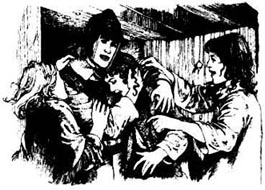
爱德华经历了很多冒险，结交了新朋友，国王很高兴得知贝弗利上校的孩子们都还活着，而且过得都很好。但是时机对于国王查理二世来说还不恰当。克伦威尔的军队仍然很强大，到1651年秋天，国王的士兵不是死了，就是逃回苏格兰了。国王独自逃走了——没人知道去了哪儿。
爱德华穿着一个死去的圆颅党士兵的军服，秘密回到了新森林。他深夜到达农舍，把他的家人和帕布洛都吓坏了。然后他们听到了他的声音，立刻爱德华就被包围在弟弟和妹妹们的怀抱中了。
第二天一大早，爱德华骑马穿过森林去见赫瑟斯顿先生。他很高兴见到爱德华，听了爱德华带来的消息，他说道：
“所以，我们必须再多等一段时间，才能看到新的国王，而且我们必须仍然装作是支持克伦威尔的。我们会说你是去为克伦威尔而战的。你很聪明，知道穿着圆颅党士兵的军服回来——这会帮我们俩远离危险。”
有好几天的时间，克伦威尔的人都在森林里搜查国王。然后传来消息说国王现在在法国，于是最后士兵们都离开了森林。
爱德华重新当起了赫瑟斯顿先生的秘书。佩兴斯非常高兴又见到他，但是爱德华却感到不自在。现在他想告诉佩兴斯他爱她，还想告诉她父亲自己的姓氏的秘密。但是他还年轻，这两件事中哪一件他都不知道该怎么处理。
一天晚上，他单独和佩兴斯待在花园里。他们聊了一会儿他和国王一起的冒险经历，接着爱德华说：
“我离开的这段日子总是想起你。现在我又见到你了，我知道我必须说出来。我爱你，佩兴斯，我想永远和你在一起。”
佩兴斯转过脸去。“你救了我的命，我永远也不会忘记，爱德华，”她轻轻地说，“我知道你是我的朋友，我谢谢你这些好心的话。但是现在我还年轻，我必须跟我父亲说。”
爱德华不明白她的回答。她是什么意思？她到底是爱他，还是不爱他？
“你觉得你父亲会因为我只是个穷护林人而反对吗？”他开口问道。
就在这时，赫瑟斯顿先生来到花园叫他们。“爱德华，我正在找你呢。议会刚刚寄来一封信，看。”
信中说议会要把安伍德及其附属的土地分给赫瑟斯顿先生。爱德华的脸变得苍白，一时间说不出话来。
“我们明天骑马过去看看安伍德，我想重建那座房子。”赫瑟斯顿先生说。
“但是安伍德属于贝弗利家，”爱德华小心地说，“或许不是所有的孩子都在火中丧生了，如果他们中有些还活着……”
“那我当然会把安伍德还给他们。但是目前安伍德属于我，佩兴斯嫁人以后，它就属于她丈夫了。”
爱德华沉默了。他现在不能告诉赫瑟斯顿先生他的秘密了，也不能说他想娶他的女儿了。
那天夜里他很早就上床了，但却睡不着。“佩兴斯现在有钱了，”他想，“很多男人都会想娶她。而且我认为她不爱我。如果我说我是爱德华·贝弗利，我敢肯定议会会收回安伍德，而我将仍旧是一个穷护林人。我不能再待在这儿了，我要离开英国，去法国找国王。”
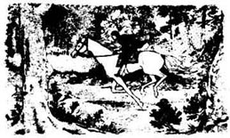
第二天清早，当其他所有人都还在睡觉的时候，爱德华离开了那所房子，骑马穿过森林回到了农舍。在那里他和汉弗莱还有妹妹们一起商量今后的计划。他们看到他这么不开心都很难过。
“现在也是艾丽斯和伊迪丝离开森林的时候了，”爱德华对汉弗莱说，“我和国王在北方的时候遇到了科宁厄姆一家，他们和爸爸很熟。他们会很乐意收留妹妹们并照顾她们的，她们在那里会过得好一些。而你，汉弗莱——不如和我一起走吧？”
“不，”汉弗莱说，“女孩们离开这儿会好一些，但是我留下来更好。帕布洛和我可以一起照看农场，而且，我也可以关注着安伍德发生的一切。总有一天你会回来的，谁知道那时候会发生什么呢？”
爱德华那天晚上就离开了，艾丽斯和伊迪丝哭得很伤心。那对他们每一个人来说都是个悲伤的时刻——是他们一起在森林中生活的结束。爱德华留给赫瑟斯顿先生一封信。“您对我一直很好，我很感谢您。”他写道。但是他没给佩兴斯留下只言片语。
赫瑟斯顿先生收到爱德华的信后，立刻骑马过来找汉弗莱，他也很难过。
“我所有的计划都出错了，”他告诉汉弗莱，“爱德华走了，我女儿很不开心。我知道你们是贝弗利家的孩子已经很久了。我想把佩兴斯嫁给爱德华。她爱他，但是她想先和我谈谈，因为她以为爱德华是个穷人。而我向议会要安伍德是因为我想重建那座房子，然后把它交给爱德华。你愿意帮我重建那座房子吗，汉弗莱？总有一天国王会回到英国，爱德华也会回来的。我想把安伍德给他准备好。”
* * *
爱德华离开了将近九年，在法国、荷兰和西班牙与法国军队一起作战。但是克伦威尔死后，1660年5月，查理二世回来成了英国的国王，当他骑马进入伦敦的时候，爱德华·贝弗利便随侍在他身边。
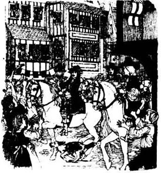
在伦敦城里的时光是快乐的。但是最高兴的时刻是新森林里的贝弗利家的孩子们终于又重新团聚了。
“我们农舍的农场现在很大了，”汉弗莱告诉爱德华，“赫瑟斯顿先生重建了安伍德，他说它是属于你的。他会很高兴再次见到你的。”
“那佩兴斯怎么样了？”艾丽斯问，“你还爱她吗，爱德华？你知道，她现在就在伦敦。”
“是的，有一天我在国王家的人群中看到她了，”爱德华说，“她比以前更漂亮了。我仍然爱她，但是我肯定她已经忘记我了。”
“你对她太不好了，”伊迪丝说，“你离开的时候她很不开心。但是她在这九年里谁也没嫁，很多男人都向她求过婚。所以我认为她还爱你。”
伊迪丝是对的。大约一年以后爱德华娶了佩兴斯，他们一起幸福地生活在安伍德。奥斯瓦尔德·帕特里奇去安伍德为爱德华工作。汉弗莱娶了一位朋友的女儿，买了一个更大的农场，把雅各布·阿米蒂奇的农舍给了帕布洛。艾丽斯和伊迪丝现在已经是漂亮姑娘了，她们嫁给了国王的士兵。到这里，我们就要和贝弗利一家说再见了。
ACTIVITIES: Before Reading
ACTIVITIES
Before Reading
1．Read the story introduction on the first page of the book. How much do you know now about the story? Complete the sentences with the right names.
Cromwell / the children / Jacob / the King
1) ______ is in prison.
2) ______'s men have burnt______'s home.
3) ______ escaped and are hiding in the New Forest.
4) ______'s father fought for ______ and was killed.
5) In 1647 it was dangerous to be a friend of ______.
6) ______ is ______'s one true friend.
7) With ______'s help, ______ learn to live off the land.
2．What is going to happen in the story? Can you guess? Tick one box for each sentence.
1) King Charles is killed.
YES □／NO □
2) Cromwell's men find the Beverley children.
YES □／NO □
3) The Beverley children are always hungry.
YES □／NO □
4) Jacob Armitage dies.
YES □／NO □
5) Edward Beverley saves somebody's life.
YES □／NO □
6) Edward Beverley goes to fight for Cromwell.
YES □／NO □
ACTIVITIES: While Reading
ACTIVITIES
While Reading
1．Read Chapter 1, and answer these questions.
Why
1) ... were the soldiers planning to burn Arnwood?
2) ... did Jacob visit the children every day?
3) ... did Edward agree to leave Arnwood?
4) ...did Edward want to fight Cromwell's soldiers?
5) ... was cooking and cleaning new work to the children?
6) ...did the soldiers search Jacob's cottage?
7) ...did Jacob tell the children to pretend to be ill?
8) ...did Jacob and the children have to cook two dinners?
2．Read Chapter 2, then complete these sentences with the right names.
1) ______ bought cottage clothes for the children to wear.
2) ______ learned to read and write.
3) ______ learned how to mend clothes.
4) ______ shot his first deer in May.
5) ______ sold some deer meat and bought a little cart.
6) ______ had to learn how to pull the cart behind him.
7) ______ loved the work on the farm.
8) ______ drove the cow away from her calf.
3．Read Chapter 3. Here are some untrue sentences about it. Change them into true sentences.
1) Alice was ill that winter and could not leave the cottage.
2) Humphrey needed a dog to help with the hunting.
3) Edward told Mr Hetherstone his name was Beverley.
4) Mr Hetherstone was one of the King's good friends.
5) Mr Hetherstone thought the burning of Arnwood was a good thing.
6) Oswald Partridge did not give Edward one of his puppies.
7) Mr Hetherstone saved Patience from the fire.
8) Edward wanted Mr Hetherstone's thanks.
4．Read Chapter 4. Who said this,and to whom? Who or what were they talking about?
1) 'We think he's dying.'
2) 'In London he tried to stop the murder.'
3) 'One day I shall fight against his murderers.'
4) 'Well, this is happy news!'
5) 'He cannot save you from the soldiers if they catch you killing the forest deer.'
6) 'He never listened to Parliament.'
7) 'I will pay you and you can help your family.'
8) 'We shall all be friends.'
9) 'I think the time is right for you to ride north and meet him.'
5．Before you read Chapter 5, can you guess what happens? Choose the best ending for these sentences.
1) Edward goes to fight for the King...
a) and is killed.
b) and comes home safely.
2) Patience loves Edward...
a) and she marries him.
b) but she doesn't marry him.
3) Mr Hetherstone knows that Edward is a Beverley...
a) but he tells no one.
b) and he tells Cromwell's men.
4) The Beverley children go to live in different places...
a) and never meet again.
b) and meet again in London.
5) King Charles Ⅱ rides into London...
a) many years later.
b) soon after Edward meets him.
6．Read Chapter 5, and join these halves of sentences.
1) Many of the King's soldiers were killed, ...
2) Edward told Patience that he loved her, ...
3) Parliament gave Arnwood to Mr Hetherstone, ...
4) Edward couldn't ask Patience to marry him, ...
5) Humphrey stayed at the farm with Pablo, ...
6) Patience had to wait for nine years...
7) but he did not understand her answer.
8) so he left England and went away to France.
9) before Edward came home and married her.
10) and Edward had to return secretly to the New Forest.
11) but his sisters went to live with friends in the north.
12) who planned to rebuild it and give it back to Edward.
ACTIVITIES: After Reading
ACTIVITIES
After Reading
1．Find these 15 words in the word search, and draw lines through them. The words go from left to right, and from top to bottom.
bucket, burn, climb, cottage, farm, flames, forest, Ladder, land, pot, pretend, save, search, smoke, stables
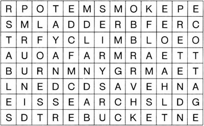
Now write down all the letters that don't have a line through them. Begin with the first line and go across each line to the end. You will have 29 letters, which will make a sentence of 5 words.
1) What is the sentence, who said it, and to whom?
2) Was it true?
3) Why did the person say it?
2．All these words come from the story. Put them into three groups, under these headings.
| army | cow | gun | pig | soldier |
| bread | deer | horse | potatoes | sword |
| calf | eggs | meat | puppy | uniform |
| chickens | enemy | milk | salt | vegetables |
3．Use the words below, and some of the words from your three lists above, to complete this passage.
making, caught, cleaned, cook, cooked, fight, fighting, hunt, planted, rode, worked
The children all ______ hard. Every spring they ______ lots of different ______ in the fields. Alice ______ the house and learned how to ______, and Edith made oatmeal______and ______ it on the stones by the fire. She also looked after the ______ and went to get the ______ every morning.
Humphrey was clever at ______ things out of wood. One day he ______ a wild ______ and her new-born ______ in the forest, so then they had ______ to drink.
Edward learned to ______ the red ______ of the forest, but he always wanted to be a ______. One day he ______ away, with his father's ______ by his side, to ______ for the King. He came home wearing a dead Roundhead's______. After that he was away for years, ______ with the French ______.
4．Here is a new illustration for the story. Find the best place in the story to put the picture, and answer these questions.
The picture goes in Chapter _________.
1) Who are the people in this picture?
2) What has just happened in the story?
3) What happens next?
Now write a caption for the illustration.
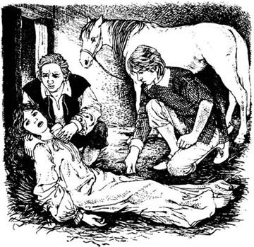
Caption: ________________________
5．What did Mr Hetherstone say to Patience when he got Edward's letter? Put their conversation in the right order and write in the speakers' names. Mr Hetherstone speaks first (number 3).
1) ______ 'I hope we will, child. I hope he'll be your husband one day. You love him, don't you?'
2) ______ 'Beverley? You mean the Beverleys of Arnwood?'
3) ______ 'Patience, I've just had a letter from Edward.'
4) ______ 'Oh Father, why didn't you tell him that? Now he's gone to France, and it's too late...'
5) ______ 'He's gone to fight for the King in France.'
6) ______ 'Yes,I do, Father. But are you happy for me to marry a poor forester?'
7) ______ 'Yes. But all my plans have gone wrong. I wanted to rebuild Arnwood and give it back to him.'
8) ______ 'From Edward? Why? Where has he gone?'
9) ______ 'He isn't a forester. His name's Edward Beverley.'
10) ______ 'Oh no! Oh, Father, we'll never see him again.'
6．What did you think about this story? Complete these sentences (you can use as many words as you want).
1) I liked/didn't like ______ because ______.
2) ______ was/were lucky because ______.
3) I felt sorry for ______ when ______.
4) I felt angry with ______ when ______.
封底
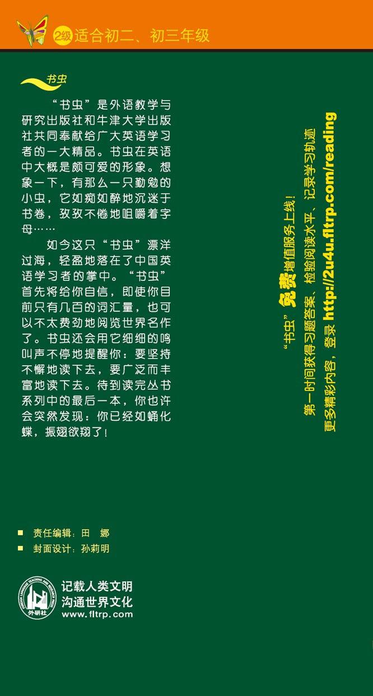